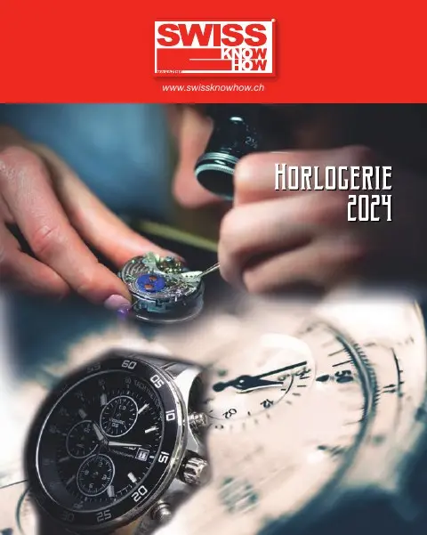

En bref
L'Association patronale des industries de l'Arc horloger (apiah), qui fédère près de 250 entreprises et plus de 18 000 travailleurs, défend les intérêts des sous-traitants et des PME dans le renouvellement de la convention collective de travail horlogère, la première CCT de Suisse signée en 1937. Le texte décrit le déroulement des négociations ouvertes en 2023 après une prorogation due au Covid, l'équilibre à trouver entre compétitivité et avantages sociaux, et l'importance pour l'apiah de faire entendre les préoccupations spécifiques de ses membres. L'association met aussi en avant ses services : conseil juridique en droit du travail, rôle d'interlocuteur avec le syndicat et office social pour les collaborateurs en difficulté.
« Ce n'est pas seulement le prix du partenariat social, c'est aussi le prix pour la paix du travail. »— Séverine Favre
L'interview intégrale
Entretenir la première Convention collective de travail (CCT) suisse signée le 15 mai 1937 demande de multiples compétences. Les partenaires sociaux décidaient à l’époque de renoncer durablement aux épreuves de force et de régler leurs rapports conflictuels par la négociation et l’arbitrage.
L’apiah (Association patronale des industries de l’Arc-horloger) au travers de sa secrétaire générale, Séverine Favre, et de quatre de ses membres défendent les intérêts de la sous-traitance et des PME horlogères et microtechniques dans le renouvellement de la CCT qui devrait entrer en vigueur en juillet 2024.
L’apiah représente près de 250 entreprises qui comptabilisent plus de 18 000 travailleurs. Sa voix compte dans les négociations qui sont présidées par la Convention patronale. En amont du début des négociations en février 2023, l’apiah avait sondé ses membres en 2019 - pour rappel la CCT aurait dû être renouvelée en 2021, mais a été prorogée de deux ans en raison du Covid - pour définir les revendications patronales relatives à la CCT. Ces revendications peuvent porter tant sur le fond que sur la forme et s’arrêter sur des propositions rédactionnelles parfois ambiguës.
Il est intéressant de se pencher sur le déroulement des négociations pour comprendre leur aboutissement. Les objectifs finaux des partenaires sociaux ne sont pas très différents : maintenir l’attrait concurrentiel de l’horlogerie et de la microtechnique sur le marché mondial pour garantir des places de travail en Suisse dans des conditions cadres favorables. Pour ce faire, le dialogue social doit trouver un juste équilibre entre la marche des affaires et les avantages sociaux accordés aux travailleurs, faute de quoi les parties ressentiront un sentiment de frustration jamais sain dans des relations amenées à rester pérennes.
Ce fragile exercice d’équilibrisme se traduit dans l’utilisation des outils existants visant à maintenir le niveau de performance de la branche et à faire face aux différentes crises successives que peut traverser le secteur : disposer de travailleurs qualifiés, bénéficier de flexibilité, pouvoir compter sur la réactivité des partenaires sociaux en cas de perturbations économiques graves, être un secteur attractif pour les nouvelles générations. Là encore, les partenaires sociaux s’accordent aisément.
Les moyens pour atteindre ces buts montrent des avis divergents, « plus de ci, moins de ça, un peu dans ce sens, mais un peu moins dans l’autre » et l’art de la négociation peut commencer. C’est la valse argumentative qui débute : essayer de convaincre l’autre que ses propres arguments sont les meilleurs, que les exemples cités sont des exceptions, que les employeurs ont un cœur, que les travailleurs ne sont pas des profiteurs, etc. Ce dialogue passe par une écoute réciproque, le respect mutuel, la bonne foi et l’ouverture d’esprit. Toutes les revendications n’aboutiront pas car certains points ne trouveront pas de terrain d’entente et resteront en suspens, peut-être jusqu’aux prochains renouvellements. L’important est aussi d’en débattre, de tenir compte de la réalité du terrain d’un côté comme de l’autre, le pragmatisme devant l’emporter sur le pur dogmatisme. En finalité, la prochaine CCT devrait, comme le veut le partenariat social original, satisfaire les deux parties au travers de concessions réciproques et d’avancées majeures favorisant le dynamisme de la branche.
La CCT horlogère et microtechnique est une bonne CCT qui pour rappelle n’est pas de force contraignante et recouvre plus de 85% de la branche. Cette grande représentativité, bénéfique pour tous, complexifie cependant le processus des négociations. En effet, l’hétérogénéité de la branche influence le poids de certains arguments du côté du patronat. Dans ce contexte, il est important que la délégation de l’apiah rappelle les préoccupations particulières de ses membres et détermine les thèmes prioritaires en décidant ceux qui nécessitent un refus catégorique et ceux qui peuvent être explorés pour une possible négociation. Pour ce faire, l’apiah a besoin de fédérer le tissu de la sous-traitance horlogère et microtechnique pour que sa voix reste écoutée au sein du monde horloger.
Les membres de l’apiah contribuent par leurs cotisations à garantir cette paix du travail qui profite à tout le monde. De ce fait, il serait juste que les entreprises qui ne sont pas encore conventionnées franchissent le pas.
Il est vrai que la CCT a un coût, il ne faut pas le nier. Ce n’est pas seulement le prix du partenariat social, c’est aussi le prix pour la paix du travail. En ce sens, l’apiah fait bénéficier ses membres d’un service juridique rapide qui conseille et oriente ses affiliés en matière de droit du travail. L’association est également l’intermédiaire et l’interlocuteur privilégié avec le syndicat en cas de nécessité. L’apiah c’est aussi un office social qui vient en aide aux collaborateurs de ses sociétaires dans le cas de difficultés financières.
Texte paru dans Swiss Knowhow – Horlogerie 2024, p. 4.
Personnes citées
- Séverine FavreSecrétaire générale de l'apiah

Paru dans
Swiss Knowhow – Horlogerie 2024
2024 · page 4 · article original en français
Lire l'article complet PDF